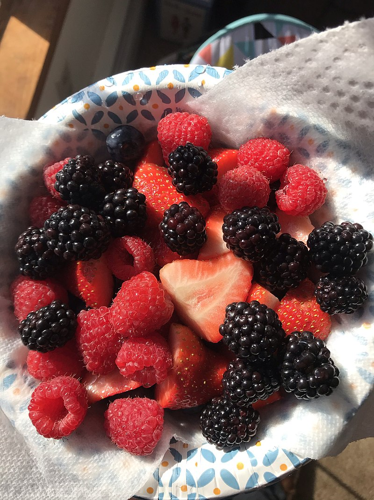
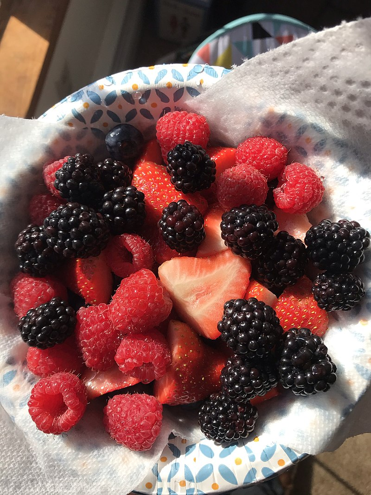
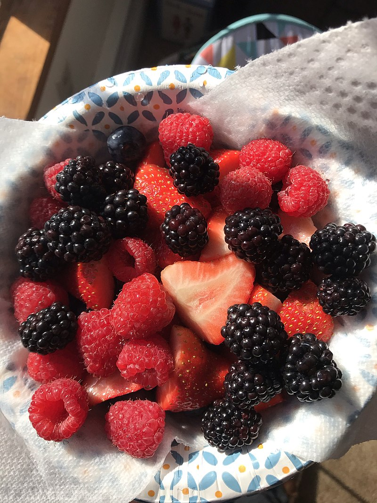

Fruits Item
- Mango
- Jackfruit
- Banana
- strawberry
- Water melon
 


A fruit results from the fertilizing and maturing of one or more flowers. The gynoecium, which contains the stigma-style-ovary system, is centered in the flower-head, and it forms all or part of the fruit.[9] Inside the ovary(ies) are one or more ovules. Here begins a complex sequence called double fertilization: a female gametophyte produces an egg cell for the purpose of fertilization.[10] (A female gametophyte is called a megagametophyte, and also called the embryo sac.) After double fertilization, the ovules will become seeds. Ovules are fertilized in a process that starts with pollination, which is the movement of pollen from the stamens to the stigma-style-ovary system within the flower-head. After pollination, a pollen tube grows from the (deposited) pollen through the stigma down the style into the ovary to the ovule. Two sperm are transferred from the pollen to a megagametophyte. Within the megagametophyte, one sperm unites with the egg, forming a zygote, while the second sperm enters the central cell forming the endosperm mother cell, which completes the double fertilization process.[11][12] Later, the zygote will give rise to the embryo of the seed, and the endosperm mother cell will give rise to endosperm, a nutritive tissue used by the embryo. As the ovules develop into seeds, the ovary begins to ripen and the ovary wall, the pericarp, may become fleshy (as in berries or drupes), or it may form a hard outer covering (as in nuts). In some multi-seeded fruits, the extent to which a fleshy structure develops is proportional to the number of fertilized ovules.[13] The pericarp typically is differentiated into two or three distinct layers; these are called the exocarp (outer layer, also called epicarp), mesocarp (middle layer), and endocarp (inner layer). In some fruits, the sepals, petals, stamens and/or the style of the flower fall away as the fleshy fruit ripens. However, for simple fruits derived from an inferior ovary – i.e., one that lies below the attachment of other floral parts – there are parts (including petals, sepals, and stamens) that fuse with the ovary and ripen with it. For such a case, when floral parts other than the ovary form a significant part of the fruit that develops, it is called an accessory fruit. Examples of accessory fruits include apple, rose hip, strawberry, and pineapple. Because several parts of the flower besides the ovary may contribute to the structure of a fruit, it is important to study flower structure to understand how a particular fruit forms.[3] There are three general modes of fruit development:
